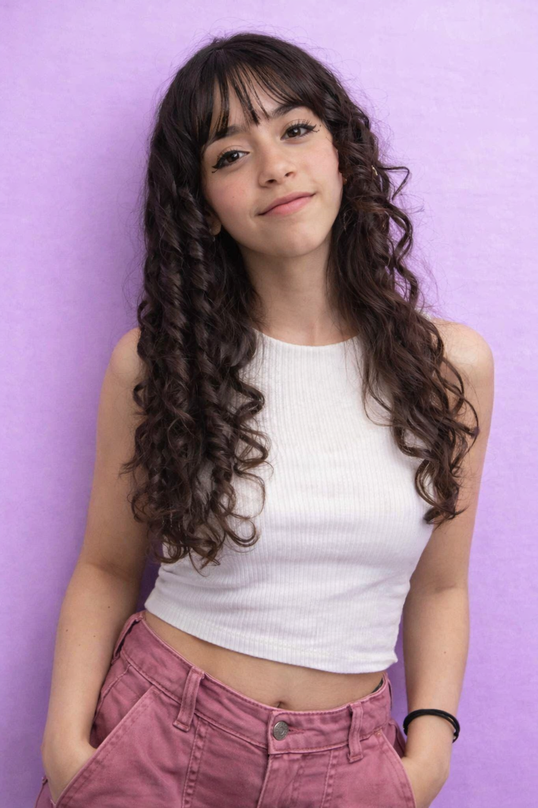

Bem-vindos ao Mundo da Nevelly ✨

Nevelly é uma jovem criadora brasileira, nascida em 01 de março de 2010, atualmente com 15 anos. Morando em São Paulo, ela transforma imaginação em cor, música e alegria.
Com autenticidade e criatividade, Nevelly constrói sua trajetória com muito carinho pelo público que a acompanha.
Criativa, sensível e cheia de ideias, Nevelly ama tudo que envolve expressão visual. Suas cores favoritas são azul, roxo e rosa, refletindo uma personalidade vibrante, alegre e sonhadora.
Ela acredita no poder da imaginação, da música e da alegria como formas de comunicação, sempre buscando espalhar coisas boas.
Nevelly é a filha do meio em uma família com cinco irmãos. Essa convivência fortaleceu sua empatia, criatividade e senso de união.
Nevelly mantém uma presença digital verdadeira e próxima do público. Sua única rede social oficial é o Instagram.
Ela também realiza colaborações em vídeo com sua amiga Mylenna Oliveira (@mylennaoficiall), criando conteúdos cheios de criatividade e sintonia.
Qualquer perfil fora desses deve ser considerado não oficial.
Um dos pilares da trajetória de Nevelly é o carinho e o respeito pelos seus fã-clubes. Ela valoriza profundamente cada pessoa que a apoia.
Para Nevelly, fãs não são apenas seguidores, mas parte da sua caminhada.